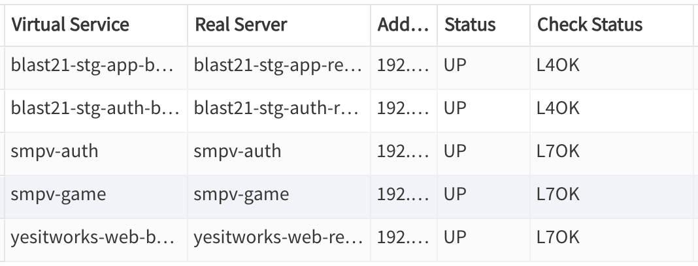
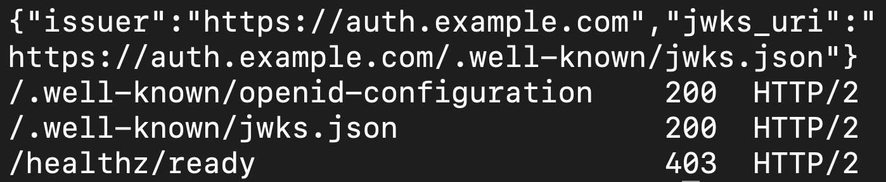

작업 목표
여기까지 만든 것은 노트북에서만 확인한 서버였다. 테스트도 통과하고 로컬 환경에서도 잘 돌았지만, 그것만으로는 실제 기기에서 쓸 수 없다. 휴대폰이 접속하려면 인터넷에서 닿는 주소와 인증서가 있어야 하고, 서버는 계속 켜져 있어야 한다. 이번 작업의 목표는 그 개발 환경을 실제로 만드는 것이었다.
작업 결과
개발 환경이 올라갔고 인터넷에서 접속된다. 인증 서버와 게임 서버가 각각의 공개 주소로 서비스되고, 전용 데이터베이스와 최소 권한 계정, 원격 설정까지 적용을 마쳤다. 같은 장비의 기존 게임 서비스는 컨테이너 목록도 프록시 설정도 그대로였다.


주소 확인, 인증서, 설정 문서, 차단해야 할 경로까지 모두 통과했다.
설치부터 게임 입장, 계정 삭제까지 공개 주소로 실행해 모두 통과했다.
비밀 생성부터 롤백까지, 사람이 실행할 순서를 문서로 남겼다.
운영 중인 게임의 컨테이너와 프록시 설정은 한 줄도 바뀌지 않았다.
실제 서버를 건드리기 전에, 노트북에서 똑같이 해봤다
배포 절차를 처음 실행할 때 가장 위험한 것은 설정 하나를 빠뜨리고도 모르는 것이다. 그래서 실제 장비를 건드리기 전에, 같은 경로를 노트북 안에 그대로 만들어 전 과정을 한 번 돌렸다.
무엇을 흉내 냈나
- 방화벽에서 쓰는 것과 같은 버전의 프록시를 컨테이너로 띄우고, 임시 인증서로 암호화 구간을 끝냈다
- 주소 이름으로 서비스를 나누고, 프록시 뒤는 암호화 없는 통신으로 넘겼다
- 실제와 같은 버전과 문자 정렬 규칙의 데이터베이스를 띄웠다
- 스키마와 계정 생성, 마이그레이션, 원격 설정 적용, 클라이언트 시나리오까지 순서대로 실행했다
예행 연습에서 걸린 것
- 프로토콜 불일치: 프록시는 암호화된 주소로 받았다고 알려주는데 서버에는 암호화 없이 전달된다. 서버가 이 조합을 거부해 모든 호출이 실패했다
- 점검 요청 거부: 다른 장비에서 상태 확인을 보내면 서버가 요청을 거부했다
- 점검 명령 없음: 컨테이너 안에 흔히 쓰는 내려받기 도구가 없어서, 상태 확인을 다른 방법으로 만들어야 했다
데이터베이스부터 프록시까지, 열두 단계
배포는 한 번에 하지 않고 단계마다 결과를 확인하며 진행했다. 각 단계는 명령을 실행하고, 기대한 출력이 나왔는지 확인한 뒤에야 다음으로 넘어갔다.
전용 데이터베이스 컨테이너
데이터베이스 장비기존 게임의 데이터베이스에 스키마만 더하는 대신, 새 게임용 컨테이너를 따로 띄웠다. 연결 수 한도와 수명을 서로 나눠 갖지 않게 하려는 것이다. 관리자 접속은 비밀번호가 명령줄에 남지 않도록 설정 파일을 컨테이너 안에 넣는 방식으로 했다.
스키마와 최소 권한 계정
노트북에서 실행서비스용 계정은 조회와 수정만, 마이그레이션용 계정만 구조 변경까지 할 수 있게 나눴다. 원격 설정 도구는 설정 테이블 네 개에만 접근하고 삭제 권한은 아예 없다. 실행 전에 만들어질 문장을 먼저 출력해 검토했고, 이미 있는 이름이 있으면 아무것도 바꾸지 않고 멈추게 했다.
비밀 값과 키 파일
서버 장비서명 키와 외부 인증 서비스의 계정 키는 서버의 관리자 소유로 두고, 컨테이너만 속하는 전용 그룹에 읽기 권한을 줬다. 그 그룹에는 사람이 한 명도 없다. 키 파일을 읽을 수 없으면 서버가 아예 시작하지 않는다.
서버 장비에서 직접 이미지 빌드
서버 장비지금까지는 작업용 PC에서 만들어 옮겼지만, 노트북과 서버의 프로세서 종류가 달라 그대로 옮기면 실행되지 않는다. 서버에 읽기 전용 열쇠로 소스를 받아 그 자리에서 빌드했다. 이미지에는 어떤 코드로 만들었는지 커밋 번호를 새겨 두었다.
배포와 마이그레이션
서버 장비마이그레이션은 별도 일회성 실행으로 먼저 돌고, 서비스는 그 뒤에 시작한다. 상태 확인이 통과할 때까지 기다린 뒤, 시작 로그에서 발급자 주소, 서명 키, 허용 로그인 방식이 의도한 값인지 확인했다.
프록시 설정
방화벽주소 이름으로 서비스를 나누는 규칙과, 상태 확인용 경로를 외부에서 막는 규칙을 추가했다. 상태 확인은 응답이 왔는지만 보지 않고 응답 내용까지 확인하도록 했다.
원격 설정 적용
노트북에서 실행설정은 데이터베이스를 직접 고치지 않고, 저장소에 둔 파일을 도구로 반영한다. 적용 전에 무엇이 바뀔지 먼저 출력하고, 적용 후에는 서버가 실제로 그 버전을 서비스하는지 확인한 뒤에야 성공으로 처리한다.
100번에 2번 실패하던 테스트를 끝까지 쫓아갔다
이전 단계에서 테스트 하나가 아주 가끔 실패했다. 혼자 돌리면 200번을 돌려도 통과하고, 전체 테스트와 함께 돌릴 때만 100번에 2번쯤 실패했다. 그냥 넘어갈 수도 있었지만, 원인을 모르는 실패는 나중에 실제 오류가 생겼을 때 판단을 흐린다.
어떻게 잡았나
실패했을 때만 자세한 정보를 남기도록 테스트를 고쳤다. 어떤 호출이 실패했는지, 서버가 그 순간 어떤 오류를 기록했는지, 데이터베이스가 돌려준 오류 번호가 무엇인지를 함께 출력하게 했다.
그 상태로 전체 테스트를 반복해서 돌렸고, 54번째 실행에서 실패를 잡았다. 데이터베이스 교착이었다.
실제로 무슨 일이었나
같은 사람의 계정 삭제와 첫 게임 입장이 동시에 일어나면, 두 작업이 같은 데이터를 서로 반대 순서로 잠갔다. 데이터베이스가 한쪽을 강제로 취소했는데, 게임 입장 쪽에는 다시 시도하는 규칙이 없어 그대로 오류가 됐다.
테스트만의 문제가 아니었다. 실제로도 그 순간에 걸린 사람은 첫 실행에서 오류 화면을 보고 다시 시도 버튼을 눌러야 했다.
이번에 알게 된 것
배포는 성공했지만, 그 과정에서 문서를 여섯 군데 고쳐야 했다. 모두 실제로 실행해 봐야만 드러나는 것들이었다.
상태 확인은 "응답이 왔는지"로는 부족했다
내부망에서 주소 하나가 다른 기기로 넘어간 적이 있었다. 프록시는 그 기기가 응답한다는 이유로 정상이라고 판단했다. 그래서 응답 내용에 우리 서버만 내는 값이 들어 있는지까지 확인하도록 바꿨다. 두 서비스의 확인 규칙을 서로 바꿔 걸어 보고, 실제로 실패하는 것도 확인했다.
프로세서 종류가 다르면 이미지를 옮길 수 없다
작업용 노트북과 서버의 프로세서 계열이 달라, 예전처럼 만들어서 옮기는 방식이 통하지 않았다. 개발 환경은 서버에서 직접 빌드하는 쪽으로 바꿨다. 운영 환경은 자동 빌드와 저장소를 쓰기로 하고 나중으로 미뤘다.
서버가 주소를 스스로 만들지 않게 했다
인증 서버가 알려주는 설정 문서의 주소를 요청 헤더가 아니라 설정값에서만 만들도록 바꿨다. 프록시가 중간에 있는 구조에서는 요청에서 유래한 값을 믿으면 주소가 틀어질 수 있다.
비밀 값 검사에도 최소 길이가 필요했다
설정 파일의 값이 로그에 새지 않았는지 확인하는 검사가 모든 줄을 의심스럽다고 보고했다. 값이 한 글자인 설정 하나가 모든 줄에 우연히 들어 있었기 때문이다. 짧은 값은 건너뛰도록 고쳤다.
접속 주소가 제대로 전달되는지 확인했다
프록시 뒤에서는 모든 접속이 프록시 주소로 보일 수 있다. 실제로 저장된 값을 확인해 보니 접속한 기기의 주소가 제대로 들어가 있었다. 대신 접속 주소를 저장하게 된 만큼, 언제까지 보관할지를 출시 전에 정할 항목으로 남겼다.
로그에도 보관 기간이 필요하다
컨테이너 로그는 크기 제한만 걸 수 있고 기간 제한은 없다. 그런데 로그에는 사용자 식별자가 들어간다. 주 1회 컨테이너를 다시 만들어 로그가 일주일을 넘지 않게 했다.
명령은 AI가 준비하고, 실행은 사람이 했다
이번 작업은 운영 중인 장비를 다루기 때문에 역할을 더 분명히 나눴다. AI 코딩 에이전트에게는 원격 장비와 공유 데이터베이스에 직접 명령하지 말 것을 규칙으로 못 박고, 도구 수준에서도 막았다. 대신 정확한 명령과 "이렇게 나오면 성공"이라는 기준을 받아 사람이 실행했다.
AI 에이전트가 맡은 일
- 배포 설계와 결정 초안
- 설정 파일, 스크립트, 운영 절차 문서 작성
- 로컬 예행 연습 환경 구성과 실행
- 단계마다 실행할 명령과 성공 기준 제시
- 공개 주소를 대상으로 한 읽기 전용 검사
- 결과 기록과 문서 수정
사람이 직접 한 일
- 인프라 정보 확인과 설계 결정
- 서버와 데이터베이스 장비에서 명령 실행
- 방화벽의 주소, 인증서, 프록시 설정
- 외부 인증 서비스의 계정과 키 발급
- 단계마다 결과 확인과 승인
- 코드 병합
이제 휴대폰이 접속할 서버가 생겼다
지금까지는 테스트가 통과했다는 것이 유일한 근거였다. 이번 작업으로 실제 주소, 실제 인증서, 실제 데이터베이스 위에서 같은 흐름이 동작한다는 것이 확인됐다.
이번 작업의 진행 순서
배포 설계와 결정
↓
설정 파일 · 스크립트 · 절차 문서 작성
↓
로컬에서 같은 경로를 만들어 예행 연습
↓
예행 연습에서 나온 문제 수정
↓
실제 장비에 단계별 배포
↓
공개 주소로 검사 · 기존 서비스 무영향 확인배포에서 가장 비싼 실수는 운영 중인 서비스를 멈추는 것이다. 이번에는 새로 만드는 모든 것에 다른 이름과 포트를 주고, 작업 전후를 비교하는 절차를 넣어 그 위험을 줄였다.
실제로 실행해 보고 나서야 드러난 것들이다. 다음 게임에서는 이 비용이 없다.
3줄 요약
- 노트북에서만 돌던 인증 서버와 게임 서버를 실 서버에 올려, 인터넷에서 접속되는 개발 환경으로 만들었다.
- 실제 장비를 건드리기 전에 같은 경로를 로컬에 만들어 예행 연습했고, 배포 직후 모든 요청이 실패했을 문제를 포함해 세 가지를 미리 잡았다.
- 100번에 2번 실패하던 테스트를 추적해 실제 사용자도 겪을 수 있던 데이터베이스 교착을 찾아 고쳤다.
다음 작업
데이터베이스 백업
진행 예정매일 자동으로 덤프를 만들어 암호화한 뒤 별도 저장 장치로 옮긴다. 복원이 실제로 되는지 주 1회 자동으로 확인하는 것까지 만들어야 백업이라고 할 수 있다.
소셜 로그인과 실기기 시험
Phase 4 마무리Unity 클라이언트에 소셜 로그인 화면을 붙이고, 실제 기기에서 로그인 · 연동 · 계정 삭제를 확인한다. Wi-Fi에서 셀룰러로 바뀌는 순간의 재시도 시험은 이번에 만든 개발 환경을 대상으로 한다.
결제
Phase 5영수증 검증과 중복 지급 방지를 붙인다. 이때 결제 기록 테이블이 생기므로, 계정 삭제 시 그 기록을 어떻게 다룰지도 함께 정리한다.